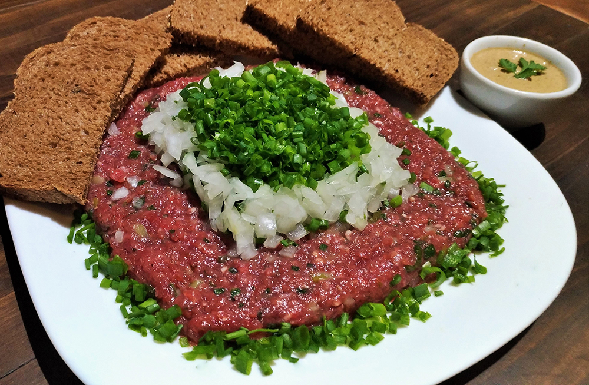
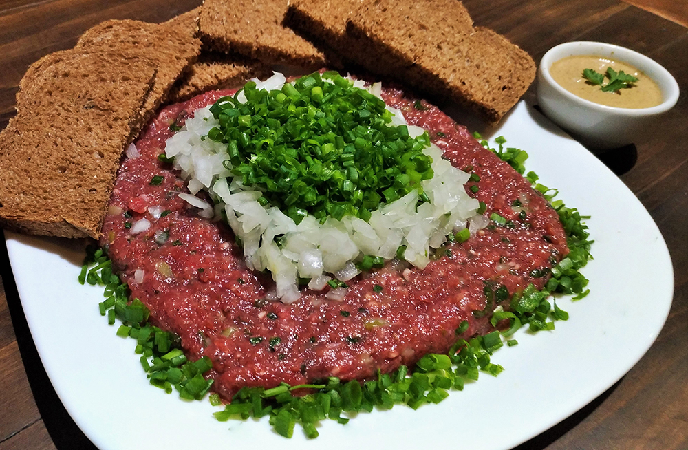

Paraná
𝐎 𝐏𝐚𝐫𝐚𝐧𝐚́ 𝐞́ 𝐮𝐦 𝐞𝐬𝐭𝐚𝐝𝐨 𝐥𝐨𝐜𝐚𝐥𝐢𝐳𝐚𝐝𝐨 𝐧𝐨 𝐒𝐮𝐥 𝐝𝐩 𝐁𝐫𝐚𝐬𝐢𝐥, 𝐜𝐨𝐦 𝐜𝐞𝐫𝐜𝐚 𝐝𝐞 𝟏𝟏,𝟎𝟖 𝐦𝐢𝐥𝐡𝐨̃𝐞𝐬 𝐝𝐞 𝐡𝐚𝐛𝐢𝐭𝐚𝐧𝐭𝐞𝐬 𝐝𝐢𝐬𝐭𝐫𝐢𝐛𝐮𝐢́𝐝𝐚𝐬 𝐞𝐦 𝟑𝟗𝟗 𝐦𝐮𝐧𝐢𝐜𝐢́𝐩𝐢𝐨𝐬. 𝐎 𝐞𝐬𝐭𝐚𝐝𝐨 𝐜𝐨𝐧𝐭𝐞́𝐦 𝐠𝐫𝐚𝐧𝐝𝐞 𝐩𝐨𝐧𝐭𝐨𝐬 𝐭𝐮𝐫𝐢́𝐬𝐭𝐢𝐜𝐨𝐬 𝐜𝐨𝐦𝐨 𝐚𝐬 𝐂𝐚𝐭𝐚𝐫𝐚𝐭𝐚𝐬 𝐝𝐨 𝐈𝐠𝐮𝐚𝐜̧𝐮 𝐞 𝐜𝐞𝐧𝐭𝐞𝐧𝐚𝐬 𝐝𝐞 𝐜𝐚𝐬𝐜𝐚𝐭𝐚𝐬 𝐪𝐮𝐞 𝐬𝐞 𝐞𝐬𝐭𝐞𝐧𝐝𝐞𝐦 𝐚𝐨 𝐥𝐨𝐧𝐠𝐨 𝐝𝐚 𝐟𝐫𝐨𝐧𝐭𝐞𝐢𝐫𝐚 𝐜𝐨𝐦 𝐚 𝐀𝐫𝐠𝐞𝐧𝐭𝐢𝐧𝐚. 𝐂𝐮𝐫𝐢𝐭𝐢𝐛𝐚, 𝐚 𝐜𝐚𝐩𝐢𝐭𝐚𝐥, 𝐨𝐜𝐮𝐩𝐚 𝐮𝐦𝐚 𝐚́𝐫𝐞𝐚 𝐝𝐞 𝟒𝟑𝟓 𝐤𝐦², 𝐩𝐨𝐬𝐬𝐮𝐢 𝐜𝐥𝐢𝐦𝐚 𝐬𝐮𝐛𝐭𝐫𝐨𝐩𝐢𝐜𝐚𝐥 𝐮́𝐦𝐢𝐝𝐨 𝐞 𝐬𝐮𝐚 𝐚𝐥𝐭𝐢𝐭𝐮𝐝𝐞 𝐦𝐞́𝐝𝐢𝐚 𝐞́ 𝐝𝐞 𝟗𝟑𝟓𝐦 𝐚𝐜𝐢𝐦𝐚 𝐝𝐨 𝐧𝐢́𝐯𝐞𝐥 𝐝𝐨 𝐦𝐚𝐫 𝐞 𝐩𝐨𝐫 𝐜𝐨𝐧𝐭𝐚 𝐝𝐢𝐬𝐬𝐨 𝐞́ 𝐜𝐨𝐧𝐬𝐢𝐝𝐞𝐫𝐚𝐝𝐚 𝐚 𝐜𝐚𝐩𝐢𝐭𝐚𝐥 “𝐦𝐚𝐢𝐬 𝐚𝐥𝐭𝐚” 𝐝𝐨 𝐩𝐚𝐢́𝐬.

 
